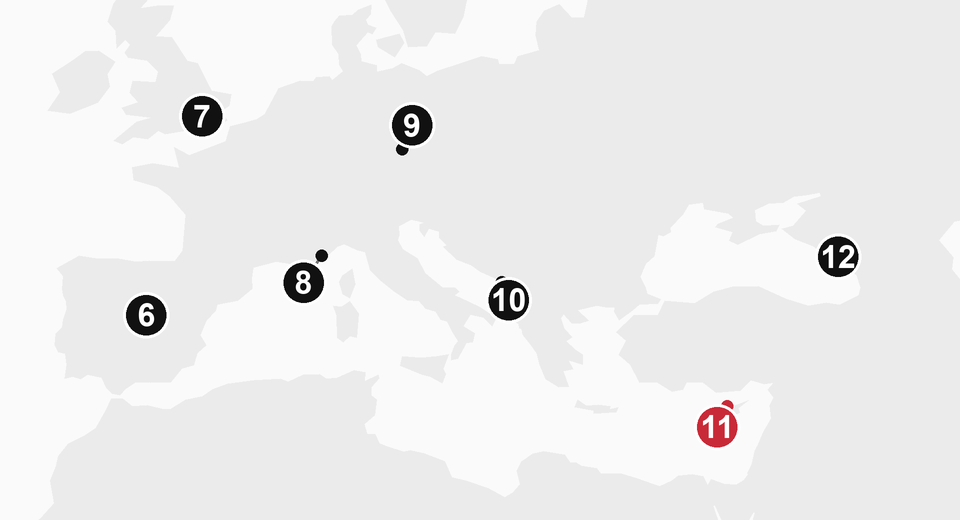
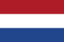
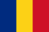

Шесть побед на Triton ONE. Что показали все призовые места
На первом европейском фестивале Triton ONE, который прошёл 5–16 ноября 2026 года на Северном Кипре, игроки, отмеченные в результатах как Russia, выиграли 6 из 16 турниров и забрали 117 из 710 призовых мест. В главном турнире они составили 16,6% поля и 16,4% призёров. Как одна и та же серия дала и шесть кубков, и почти точное совпадение долей? Фестиваль Triton ONE · Итоговая сводка с места событий
Трижды больше предыдущего максимума
До ноябрьского Triton ONE российский максимум составлял две победы за фестиваль. В мае 2023-го на Северном Кипре Вячеслав Булдыгин и Анатолий Злотников выиграли два турнира, шедших параллельно. В ноябре 2024-го в Монте-Карло оба титула взял Артур Мартиросян. Шести или большего числа российских побед на другой остановке в архиве с 2016 года нет. Кипр 2023 · Монте-Карло 2024 · Таблица всех фестивалей
- Чеджу, март 2019SHRS1 / 7
- Северный Кипр, май 2023SHRS2 / 15
- Монте-Карло, ноябрь 2024SHRS2 / 14
- Чеджу, февраль 2025SHRS1 / 18
- Чеджу, сентябрь 2025SHRS1 / 18
- Чеджу, март 2026Triton ONE1 / 14
- Чеджу, март 2026SHRS1 / 20
- Черногория, май 2026SHRS1 / 16
- Северный Кипр, ноябрь 2026Triton ONE6 / 16


- 1Багамы2
- 2Хойан1
- 3Макао1
- 4Филиппины4
- 5Чеджу9
- 6Мадрид1
- 7Лондон2
- 8Монте-Карло2
- 9Розвадов1
- 10Черногория6
- 11Северный Кипр5
- 12Сочи1
Triton Poker Plus — приложение с результатами. В ноябрьском календаре Северного Кипра две программы Triton. В Triton ONE было 6 из 16 российских побед. В шедшей следом Super High Roller Series — 1 из 9 по состоянию на 24 ноября. Тот кубок взял Никита Кузнецов, обыграв Фила Айви в турнире за $50 000. Если считать обе программы одной поездкой, получается 7 из 25 на дату среза. Расписание SHRS · Победа Кузнецова
Шесть кубков и два российских финала
Первый российский титул пришёл в женском турнире за $3 000. В решающей раздаче Елена Ясючёня собрала сет с карманными четвёрками против тузов Ксении Колотюк. Почти зеркальный финал закрыл фестиваль. В High Roller за $15 000 Арсений Кармацкий получил карманных тузов против Александра Зубова и удержал преимущество. Оба хедз-апа закончились за одну раздачу. One-W Championship · High Roller
| Победитель | Турнир | Выплата за первое место |
|---|---|---|
| Елена Ясючёня | One-W Championship, $3 000 | $35 500 |
| Елена Яковлева | One-W Bounty Quattro, $2 000 | $11 400 |
| Николай Кануников | PLO 6-Handed, $6 000 | $178 000 |
| Иван Козлов | NLH Quest, $3 000 | $67 000 |
| Юрий Анисимов | PLO Bounty Quattro, $2 000 | $28 000 |
| Арсений Кармацкий | High Roller, $15 000 | $1 325 000 |
В таблице указана выплата за место. Организатор также сообщил о $6 000 за выбивания у Яковлевой и $18 000 у Анисимова. Два титула пришлись на женские турниры, четыре — на остальные 14 турниров. Однодневные турниры · PLO за $6 000 · Quest
Российский игрок был в призах в 15 из 16 турниров. Из 48 мест в первой тройке игроки с отметкой Russia заняли 14. Они получили $5,33 млн из $24,20 млн выплат за места. Почти половина российской суммы пришлась на один турнир, High Roller. Там Кармацкий и Зубов вдвоём получили $2,157 млн. Результаты всех турниров на Кипре · Таблица выплат High Roller
-
 Россия6
Россия6
-
 Венгрия2
Венгрия2
-
 Израиль2
Израиль2
-
 Китай2
Китай2
-
 Испания1
Испания1
-

Нидерланды1 -

Румыния1 -
 Франция1
Франция1
Какие турниры принесли кубки и деньги
Четыре из шести побед пришлись на бай-ины $2–3 тыс. Они дали примерно пятую часть российских выплат за места. Турниры с бай-инами $8–15 тыс. принесли 72% выплат при одном титуле. Так, в High Roller россияне заняли всего восемь из 79 призовых мест, но взяли два самых дорогих. Таблица выплат High Roller
| Бай-ин | Победы / турниры | Доля выплат |
|---|---|---|
| $2–3 тыс. | 4 / 8 | 20,8% |
| $4–6 тыс. | 1 / 5 | 7,5% |
| $8–15 тыс. | 1 / 3 | 71,7% |
По дисциплинам получилось 4 из 13 побед в холдеме и 2 из 3 в пот-лимитной омахе. В омахе игроки с отметкой Russia заняли 12 из 50 призовых мест (24%), в холдеме — 105 из 660 (15,9%). Четыре кубка в открытых турнирах сами по себе превышают предыдущий российский максимум за фестиваль. Для сравнения эффективности по дисциплинам понадобился бы состав полей, а омаха на Кипре представлена всего тремя турнирами. Таблица всех 16 турниров
| Формат | Победы / турниры | Доля призовых мест |
|---|---|---|
| Холдем | 4 / 13 | 15,9%105 / 660 |
| Омаха | 2 / 3 | 24,0%12 / 50 |
| Открытые турниры | 4 / 14 | 16,2%113 / 698 |
| Женские турниры | 2 / 2 | 33,3%4 / 12 |
В Main Event появился знаменатель
У главного турнира было 1 006 входов от 439 игроков. Из них 567 входов были повторными. Организатор назвал число уникальных игроков по странам. У России было 73 участника, это крупнейшая группа в поле. В итоговой таблице — 26 российских призёров из 159. Алексей Истомин дошёл до девятого места и получил $98 000. Победил нидерландец Рауль Канме. Состав поля · Таблица выплат · Финал Main Event
Если взять долю в поле за ориентир, среди 159 призёров получаем 26,4 ожидаемого места при равной частоте попадания в деньги на одного участника. В таблице их 26. Это описательное сравнение участников одного турнира. Для оценки игры на один вход понадобилось бы узнать, сколько раз регистрировались игроки каждой группы.
Что изменилось относительно Чеджу
Северный Кипр был третьей остановкой Triton ONE. На двух предыдущих фестивалях в Чеджу вместе был один российский титул. Его взял Артур Мартиросян в PLO за $3 000 в марте 2026 года. На Кипре титулы выиграли шесть разных игроков. Дебютный фестиваль и список победителей · Результаты марта 2026 · Победа Мартиросяна
| Фестиваль Triton ONE | Победы России | Места России в призах Main Event |
|---|---|---|
| Чеджу, сентябрь 2025 | 0 из 10 | 8 из 167 · 4,8% |
| Чеджу, март 2026 | 1 из 14 | 9 из 199 · 4,5% |
| Северный Кипр, ноябрь 2026 | 6 из 16 | 26 из 159 · 16,4% |
Число российских призовых мест в Main Event выросло примерно втрое. Чтобы понять вклад состава поля, нужны доли российских участников в обоих турнирах на Чеджу. Для сравнения всех трёх фестивалей по эффективности нужны ещё и страны участников по каждому турниру, в том числе для тех, кто вылетел до денег. Пока можно сравнить наблюдаемые результаты и проверить состав поля в одном Main Event.
Результаты всех 16 турниров
В каждой строке победитель, его выплата за место, лучший российский результат и сумма российских выплат за места.
| Турнир | Победитель | Россия / призовые места | Выплаты России |
|---|---|---|---|
| #1 QQPK Genesis$3 000 · 912 входов | Alin IvanRomania · $450 000 | 22 / 1462-е место · Viktor Kudinov | $758 700 |
| #2 NLH Bounty Quattro$2 000 · 54 входов | Ran AzorIsrael · $21 000 | 3 / 96-е место · Roman Stoyka | $10 108 |
| #3 NLH Mystery Bounty$5 000 · 607 входов | Quan ZhouChina · $293 000 | 19 / 10323-е место · Aleksei Savenkov | $110 200 |
| #6 One-W Championship$3 000 · 42 входов | Elena YasyuchenyaRussia · $35 500 | 2 / 71-е место · Elena Yasyuchenya | $61 000 |
| #7 NLH Big Bounty$4 000 · 96 входов | Jingyao YanChina · $41 000 | 2 / 146-е место · Roman Stoyka | $12 800 |
| #9 NLH 7-Handed$10 000 · 324 входов | Benedek FarkasHungary · $572 000 | 9 / 552-е место · Dmitry Kukhtarev | $807 484 |
| #11 One-W Bounty Quattro$2 000 · 23 входов | Elena IakovlevaRussia · $11 400 | 2 / 51-е место · Elena Yakovleva | $14 400 |
| #12 Main Event$8 000 · 1006 входов | Raoul KanmeNetherlands · $1 320 000 | 26 / 1599-е место · Aleksei Istomin | $558 600 |
| #13 PLO 6-Handed$6 000 · 138 входов | Nikolai KanunikovRussia · $178 000 | 7 / 231-е место · Nikolay Kanunikov | $268 500 |
| #16 NLH One Night$2 000 · 143 входов | Ander VallinasSpain · $61 000 | 8 / 232-е место · Sergey Rumyantzev | $79 000 |
| #17 PLO 6-Handed$3 000 · 76 входов | Gergo NagyHungary · $56 000 | 3 / 142-е место · Georgiy Klenin | $57 350 |
| #18 NLH Quest$3 000 · 95 входов | Ivan KozlovRussia · $67 000 | 3 / 131-е место · Ivan Kozlov | $91 800 |
| #20 NLH 7-Handed$5 000 · 129 входов | Alexandre ReardFrance · $130 500 | 1 / 2012-е место · Semen Sorkin | $10 200 |
| #21 PLO Bounty Quattro$2 000 · 78 входов | Iurii AnisimovRussia · $28 000 | 2 / 131-е место · Yuriy Anisimov | $36 000 |
| #22 High Roller$15 000 · 488 входов | Arsenii KarmatckiiRussia · $1 325 000 | 8 / 791-е место · Arsenii Karmatckii | $2 456 000 |
| #25 NLH Bounty Quattro$5 000 · 151 входов | Shalev HalfaIsrael · $104 000 | 0 / 27Без призовых мест | — |
Как посчитано
Одна строка — один результат в денежной таблице. Один игрок может попасть в неё несколько раз за фестиваль. Страну беру из поля в таблице, включая разные обозначения стран в репортажах и базах. У 10-го места в кипрском Main Event поле страны пустое в Hendon Mob. Репортаж PokerNews идентифицирует игрока как Махмуда Бедуи и указывает Германию. В двух таблицах Чеджу пустая страна есть у трёх результатов в сумме. При отнесении всех этих строк к России доли в Чеджу всё равно ниже 6%. 10-е место · Страна Бедуи в репортаже
В основной выборке 16 живых денежных турниров. Отборочные и гибридный QQPK Challenge учитываются отдельно. В Challenge выиграл малайзиец Анг Янг И, у четырёх игроков с отметкой Russia были призы в виде турнирных билетов. Суммы в статье — выплаты за места до вычета бай-инов и повторных входов. Бонусы за выбивания приводятся отдельно по данным организатора. В турнире PLO Bounty Quattro за $2 000 ориентир по бай-ину — отчёт Triton. В карточке Hendon Mob стоит $5 000, при этом выплаты за места совпадают с отчётом организатора. Расписание и отборочные · QQPK Challenge · Отчёт о PLO Bounty Quattro · Карточка Hendon Mob
Исторический срез включает 338 завершившихся турниров на 35 фестивалях и отдельных остановках с января 2016 года по 24 ноября 2026 года. В него входят Triton ONE, старшая серия и денежные турниры WSOP Paradise под брендом Triton. В 2020–2021 годах живых остановок в архиве нет. Для сравнения берём первое место по итоговой таблице, в том числе после сделки о выплатах. Поздние турниры кипрской SHRS находятся за датой среза. Календарь MTT Database · Хронология Triton · Совместные турниры WSOP
В архиве MTT Database и прежнем указателе сошлись российские победы. Сводка организатора восстановила два турнира Чеджу в сентябре 2025-го, отсутствовавшие в прежнем указателе. Их выиграли Элтон Цанг и Стивен Чидвик. Для каждой российской победы в исторической таблице есть ссылка на отчёт или итоговую таблицу. Отчёт за сентябрь 2025 года
Данные по призовым местам · Данные по победителям всех турниров · Исторический указатель Triton